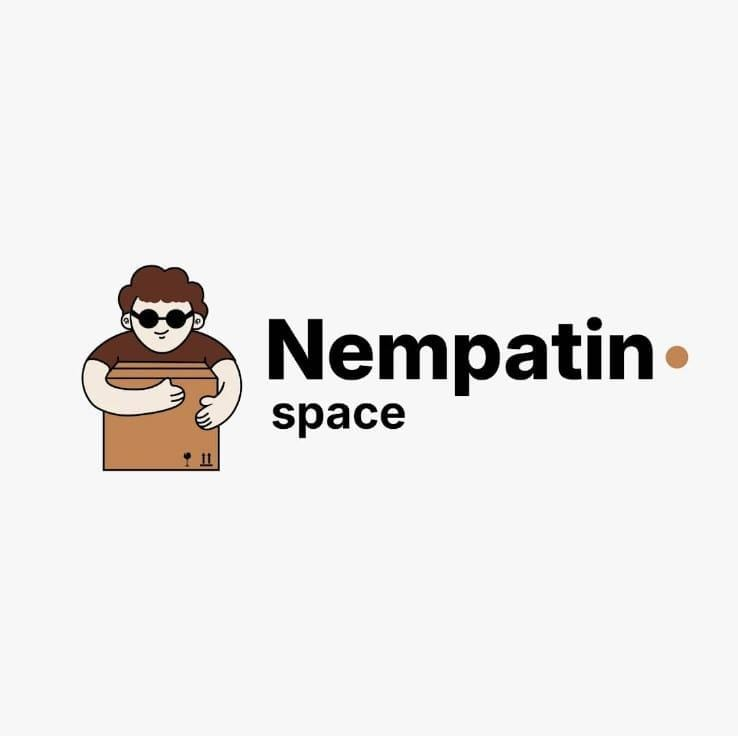

Nempatin.space hadir di Purwokerto sebagai solusi penitipan barang dan motor yang praktis, aman, dan bisa diandalkan. Kami percaya bahwa setiap barang yang dititipkan membawa cerita dan kebutuhan yang berbeda, sehingga layanan kami dirancang untuk fleksibel mengikuti situasi pelanggan — bukan sebaliknya.

Banyak mahasiswa, pekerja rantau, dan warga Purwokerto yang menghadapi masalah serupa: butuh tempat menyimpan barang atau motor sementara waktu, tapi bingung mencari yang benar-benar aman dan bisa dipercaya. Dari situlah Nempatin.space hadir — sebuah ruang penitipan yang dikelola langsung dengan pengawasan ketat, sistem pencatatan yang rapi, dan pelayanan yang mengutamakan kenyamanan pelanggan.
Kami tidak hanya menyediakan ruang, tapi juga ketenangan pikiran. Setiap barang yang masuk dicatat, setiap area dipantau CCTV selama 24 jam, dan setiap pelanggan diperlakukan dengan keramahan yang sama seperti kami memperlakukan barang milik sendiri.
Selain penitipan, kami juga memperluas layanan menjadi jasa angkut dan pindahan, membantu proses pindah kos maupun rumah agar lebih ringan tanpa harus repot mencari kendaraan dan tenaga tambahan secara terpisah.
Nilai-nilai ini bukan sekadar slogan — kami terapkan dalam cara kami menyambut, mencatat, menyimpan, hingga mengembalikan setiap barang yang dititipkan.
Kepercayaan pelanggan adalah prioritas utama. Barang dan motor yang dititipkan kami perlakukan dengan penuh tanggung jawab, sejak diterima hingga diambil kembali.
Durasi titip menyesuaikan kebutuhan, bukan sebaliknya — dari hitungan jam sampai bulanan, tanpa kontrak yang memberatkan.
Harga yang wajar dan transparan, tanpa biaya tersembunyi, sehingga siapa pun bisa menikmati layanan penitipan yang berkualitas.
Tim kami ramah, responsif, dan bekerja dengan sistem pencatatan yang rapi agar setiap transaksi titip-menitip berjalan jelas dan tanpa kebingungan.